K.Town Liquor Boutique, Gitesi, Karongi
K.Town is a liquor boutique, café and terrace above Lake Kivu in Karongi. Guests come for a glass of wine at sunset, an iced coffee on the terrace, a fresh juice after a day on the lake, and a quiet room for the night. The brand should feel like the place: warm, relaxed, a little elegant, proudly Rwandan and at ease with visitors from anywhere.
We greet everyone like a regular. Murakaza neza, bienvenue, welcome: the first words are always a welcome.
Good glasses, clean design, prices that are easy to read. Nothing loud, nothing cluttered.
Lake Kivu, the hills, kitenge on the tables, the K.TOWN sign glowing at night. Local pride in every detail.
Three languages, clear prices in RWF with a dollar guide, order from the table, pay with MoMo.
A great drink, a great view and an easy visit: order from your table, pay when you’re ready, and come back for the next event.
International travellers and tourists, Rwandan visitors from Kigali and beyond, guests staying in our rooms, and Karongi friends who come for events.
“Where Lake Kivu meets the glass” is a suggested brand line for social media, signs and the future website. The official name stays K.Town Liquor Boutique.
K.Town brand guidelines2The K is a corkscrew opening a glass of wine. Keep it exactly as drawn: always from the original files in assets/img/brand.
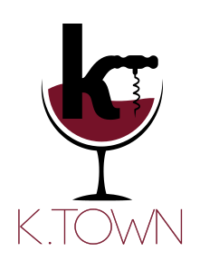
Full logo. First choice whenever there is room.
Mark. App icon, small spaces, centre of the QR code.
Wordmark. Wide spaces, next to the mark on photos.
On white and light paper: black and wine.
On wine: white, with rosé wine in the glass.
On black or a dark photo: white and rosé.
A logo becomes a brand when it looks the same everywhere: on the sign, the menu, WhatsApp and the receipt.
Stretch or squash it.
Change its colours.
Rotate or tilt it.
Add outlines, glows, shadows or 3D.
Put it on a busy photo without a dark overlay.
Retype the name in another font.
Wine, black and white come straight from the logo file. Use mostly white, black for words, and wine for the one thing that matters most on the page.
Both are free Google Fonts (SIL Open Font License) and are already built into the K.Town system.
The voice of the logo. Round and geometric like the K.TOWN letters. For headings, text, prices, buttons and signs.
The host’s voice. A classic italic for menu section titles, greetings and short headlines. Never for long text or numbers.
The wave of wine inside the logo is K.Town’s one graphic shape. It finishes a photo, closes a dark panel or divides a page. Once per layout is enough.
White over photos (menu cover, table cards, poster). A thin wine line on paper (printed menu). Wine under dark panels (owner dashboard).
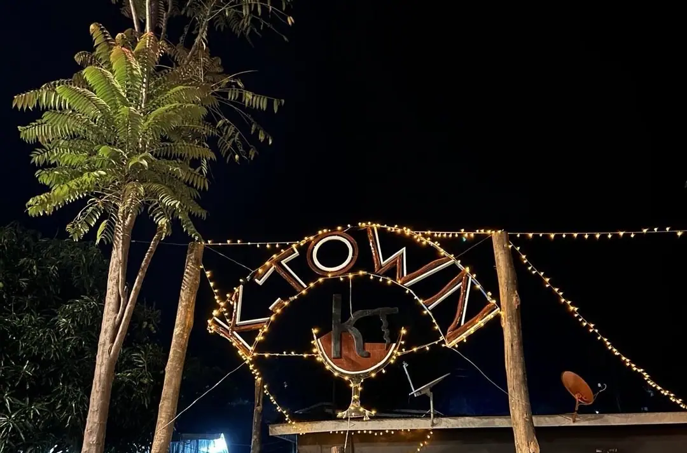
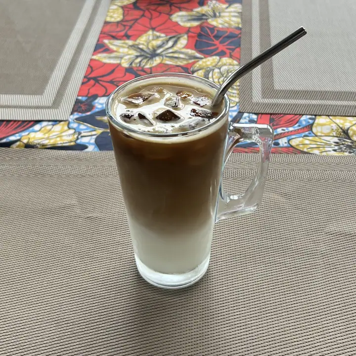
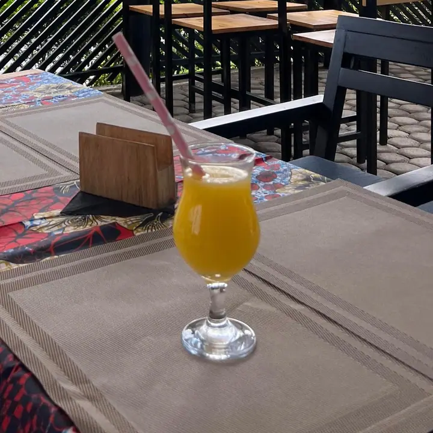
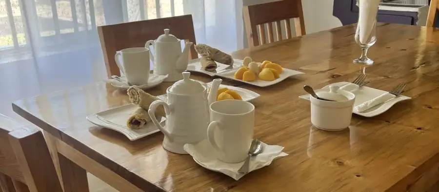
Short, warm and clear. Greet first, say what happens next, use plain words. Guests read us in English, French and Kinyarwanda.
| Instead of | Write |
|---|---|
| Order submitted successfully. | Order received. Our team is confirming your order. |
| Status: ready for delivery. | Your order is ready. We’re bringing it to Table 2 now. |
| Payment pending. | Pay whenever you’re ready. |
| Error: network failure. | Your order didn’t go through. Check your connection and try again. |
| Rate our service. | How was your visit? |
One short line: what it is and why it’s good.
Ripe mango, blended smooth.
Espresso poured over cold milk and ice.
Welcome to K.Town
Bienvenue chez K.Town
Murakaza neza kuri K.Town
Thank you: Merci, Murakoze.
Only to guests who said yes. One message per event, never more than two a month.
K.Town brand guidelines8Every piece below is made by the K.Town system from the same menu, so prices and items always match.
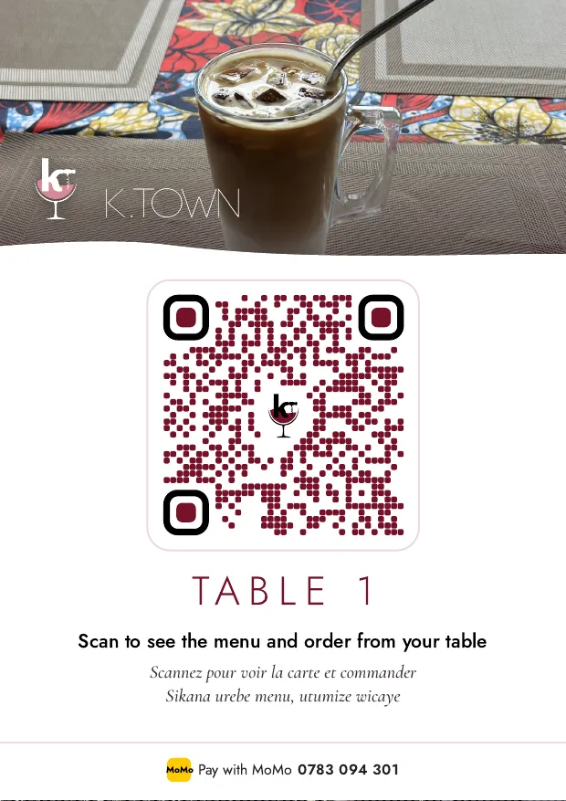
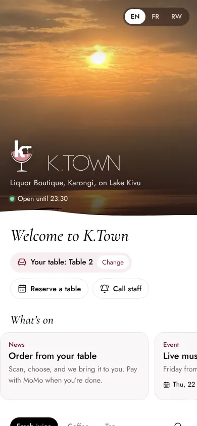
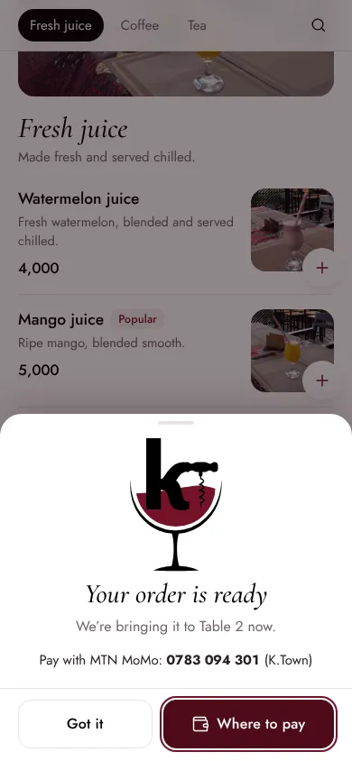
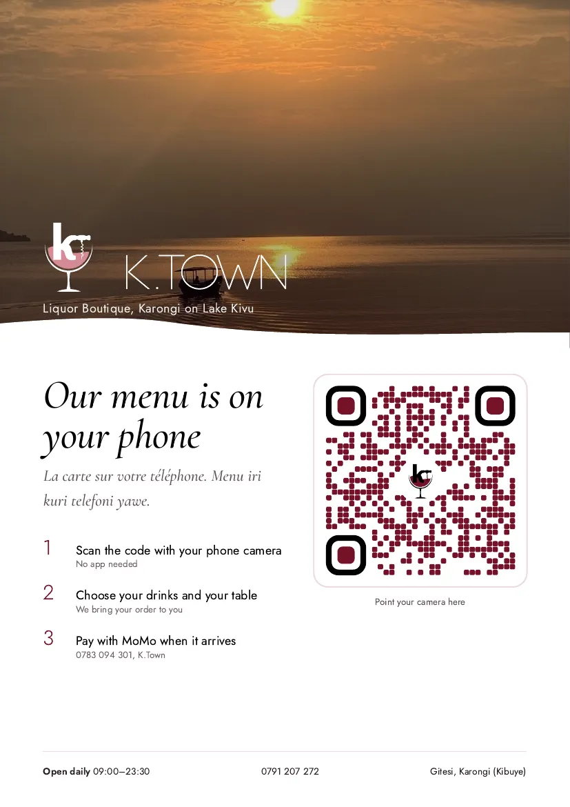
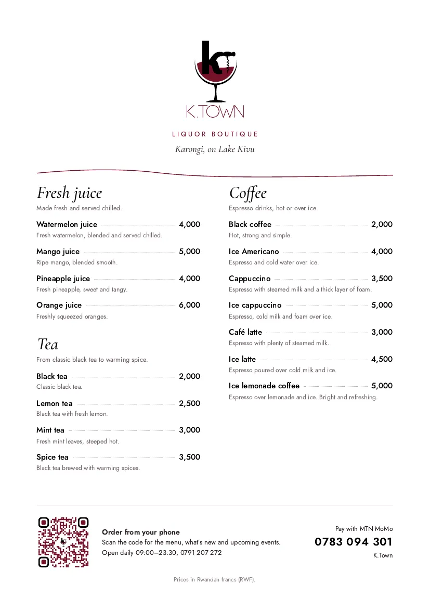
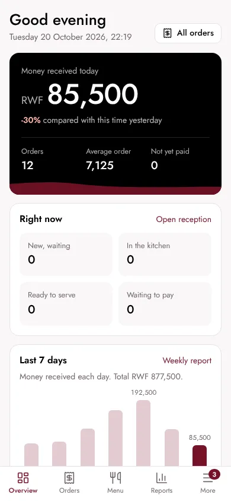
Wine dots, black corners and the K.Town mark in the centre. The system makes one for every table in Owner dashboard, Tables & QR.